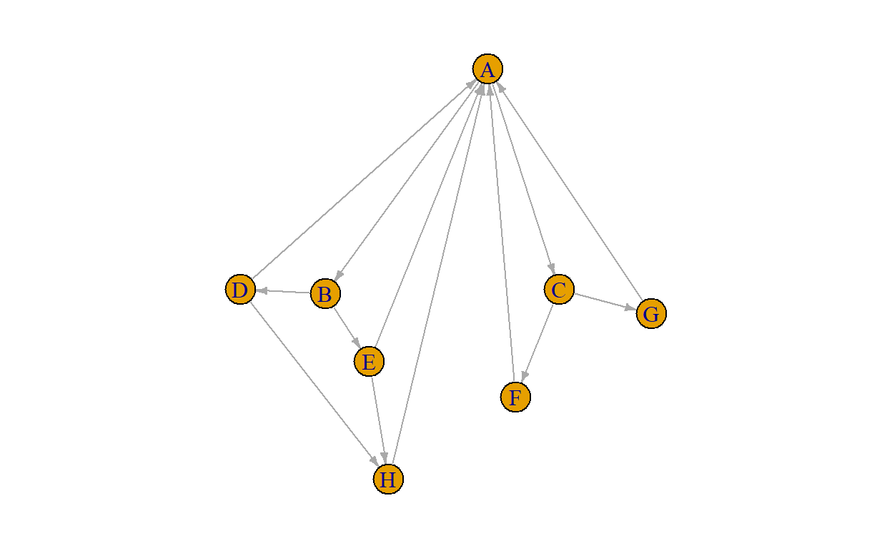

Introduction
So far, you learned the basics of R and were introduced to some first work with network data.
In this tutorial, you are going to learn how to compute a bunch of statistics at the graph level and manipulate network objects a bit.
Moreover, you’ll learn how to find and extract subgroups from a network.
Pretty cool stuff!
Yep, that’s what I said
Let’s get to it.
Checking installation
You are used to it by now: we first quickly make sure you have all of the required packages installed for this tutorial.
R Version
You need to have installed R version 4.1.1 and this tutorial is going to check it for you. Please hit the Run Code button.
check_R()R Studio Version
You need to have installed RStudio version 1.4.1717 or above. Let’s check by clicking Run Code:
check_RStudio()Packages
You need to have a few packages installed. Click the Run Code to check. It will check whether you have the required packages installed and will attempt to install any missing packages in case there are any (or it will advise you to upgrade SNA4DS).
check_pkgs()Bipartite networks
As you will recall from our lecture, a bipartite network (also called a bimodal network or a two-mode network) is a network with two kinds of nodes, where edges run only between nodes of different kinds.
Recommender systems are prominent examples of bipartite networks, where people are connected to books or music or movies or so and the edges measure “liking” or “purchasing.” Or authors and the papers they write. Or students and the classes they take. Or movie stars and the movies they play in. Or directors and the boards of directors they are a member of. Keywords and the pages they appear in. Trains and the stations they visit. Metabolites and the biological reaction they participate in.
You get the idea.
They are actually quite common.
You learnt about the adjacency matrix for a unimodal network. The equivalent of the adjacency matrix for an (undirected unweighted) bipartite network is a rectangular matrix called the incidence matrix. If n is the number of items or people in the network and g is the number of groups/movies/books/train stations, then the incidence matrix B is the g × n matrix where cell (i, j) is 1 if item j belongs to group i, and 0 otherwise.
Let’s try it out.
Load the judge_net_bp network from the SNA4DSData package. This is a network of judges and the cases they worked on. First, load the dataset, then print it.
cat('load the "judge_net_bp" network and print the object')data(judge_net_bp, package = "SNA4DSData")
igraph::print.igraph(judge_net_bp)Now, you should be able to answer this quiz question:
We wanted to see the incidence matrix. The problem is, there are 1189 vertices in the network, so it will be quite large. Still, let’s be brave and just go for it. If smoke comes out of our laptops, we’ll just get a new one later.
You get the incidence matrix for a bipartite network using igraph::as_incidence_matrix. Do that now and call the matrix im for short.
cat('Create the incidence matrix for "judge_net_bp" and call it "im". Then print it.')im <- igraph::as_incidence_matrix(judge_net_bp)
imOK, that’s clearly too big for our screens. Let’s look at it a bit further. As you will recall, an adjacency matrix tends to be squared: there are as many potential senders as receivers, so there are as many rows as columns. That makes a matrix square.
Is im square? Let’s look at the dimension of im.
dim(im)The first number represent the number of rows that im has the second number the number of columns. Well, is it square? Why does it have a lot more rows than columns?
I think you have figured it out.
Plot
Let’s make a quick plot. It will not be pretty, but it will be clear: this is a bipartite network! I have given the judges a black color (because of their robe, of course) and the cases are colored white (because, …., not sure, just because I needed a different color than black).
igraph::plot.igraph(judge_net_bp, vertex.label = NA,
vertex.sizes = 2, layout = igraph::layout.bipartite)vertex attributes
Because there are two types of vertices in the network, we need to have a way to figure out which is which. In this network, we need to be able to know whether a specific node is a judge or a case. It is not strictly necessary to do so, but it is common practice to include a vertex attribute called type in a bipartite network object for this purpose. This attribute is usually logical (ie. TRUE or FALSE). It is TRUE for one type of node and FALSE for the other.
Extract the type attribute and make a table for it.
cat('Extract the "type" attribute and make a table for it. ')igraph::V(judge_net_bp)$type |> table()There are, of course, a lot more cases than there are judges. So, which value of type represents a judge and which represents a case?
Wonderful.
As you can see in the network object, theree is also a vertex attribute called JudgeSex. Believe it or not, but this includes the gender of the judge.
Make a table of the gender of the vertices. But, before you do, think about what you expect to see as an answer.
In this case, we will make use of the fact that the table() function has an argument called useNAa. Type ?table in the box below to check out the documentation for the table() function. Below, we use the argument useNA = "ifany". Can you make sense of the output you get?
igraph::V(judge_net_bp)$JudgeSex |> table(useNA = "ifany")Why are so many values missing?
Projection
Often, we find it a lot easier to work with unimodal / unipartite networks. So, rather than considering the edges between authors and articles, it is often more interesting to analyze the network of co-authorship. In this case, there would be an edge between two authors, every time they are an author of the same paper (in other words: every time they have an edge with the same article).
Here, we can do a similar thing and make a collaboration network for the judges: they share an edge when they each work on the same case.
Collapsing a bipartite network to a unipartite network is called projection. The igraph developers are not very creative and hence call the function that does this igraph::bipartite_projection. Ah well, it makes it easy to find.
There are several arguments–check them out with ?igraph::bipartite_projection–, but you don’t need to mess with them. Use the defaults and you are good to do.
Do that now:
cat('Project judge-net-bp so a one-mode network. ')igraph::bipartite_projection(judge_net_bp)This actually creates TWO networks: a network of judges that have worked on a case together and a network of cases that had a judge in common. Can you see which is which?
You can just extract a single network using the which argument of the function. I’ll use that below, to give you example of that.
Quick plotting this network creates something that is indeed quite different from the previous plot we did.
judge_net <- igraph::bipartite_projection(judge_net_bp, which = TRUE)
igraph::plot.igraph(judge_net, vertex.label = NA,
vertex.sizes = 1, layout = igraph::layout.fruchterman.reingold)Not all judges are connected, as you can see.
Ah, and you can actually check how many judges and how many cases there are (and how many edges in each), if you hadn’t figured that out yet. It’s a bit superfluous, but there is an actual function for it:
igraph::bipartite_projection_size(judge_net_bp)Centrality on the internet
And now, for something completely different.
(Recognize the reference? The youtube clip in te link below is not part of the course and feel free to skip it, but I can use a humorous break every now and then).
And now, for something completely different–clip on youtube
OK, back to serious (albeit intellectually entertaining) topics.
It makes sense to consider the internet as a network of pages that point to each other. That fits within the framework if this course. Here is a visualization of the developing internetwork over time.
Gorgeous! There is a lot of research underlying this, see here if you are interested
You can calculate the same centrality measures for this network that we have already discussed in this course. However, within the context of internet search, these measures may not be the most useful. In this case, users are searching for the most prominent pages and are looking at Google (and other search engines) to put the best pages (that are connected to a specific topic) on the top of the search result list. So, how does Google decide what page goes to top, to the second place, et cetera?
The first task is non-network related: Google crawls the internet continuously and tags web pages according to the topics they relate to. How they do that is outside the scope of this course. Then, given a list of pages, how do we determine how prominent each page is?
Google does this as follows.
- Assume that if page A points to page B, then page B is probably relevant to A.
(In a websearch context, relevance and importance are similar concepts)
If many pages point to page B, B is probably a very and widely relevant page.
If page B is pointed to by unpopular/not-relevant page A, that does not add much importance and relevance to B.
If B is pointed to by popular page A, this makes B probably even more important.
In other words: page B inherits its importance from the importance of the pages pointing to it.
That makes sense.
Simple algorithm
A simple way to implement this is as follow:
In a network with \(n\) nodes, give all nodes initial PageRank \(1/n\)
Choose a number of steps \(k\)
Perform a series of \(k\) updates, each time as:
Each page divides its current PageRank equally across its outgoing links and passes these equal shares to these links (if a page has no outgoing links, it passes all its current PageRank to itself.)
After all nodes have done this, the new PageRank of a page is the sum of scores it just received.
This means that the total PageRank remains constant, it just moves around between the nodes until an equilibrium is reached.
Implementation
Let’s consider a small 8-vertex network, we call it internet. It looks as follows:
(for technical reasons, this has already run for you)
par(mar = c(.5, .5, .5, .5))
igraph::plot.igraph(internet, vertex.label = igraph::V(internet)$code, layout = coor,
edge.arrow.size = 0.4, margin = .1)
Now, with the algorithm above, try to calculate by hand what the next values are. So: all vertices start with PageRank 0.125 (=1/8). Page A has two outgoing edges (to B and C), so it “donates” 0.0625 (=1/16) to each.
Page B points to pages D and E, so it donates 0.0625 to each. Andsoforth. After each page has donated its initial 0.125 to the other pages, calculate how much each page now has. Since PageRank is not created (and only re-allocated), the new PageRank scores should still add up to 1. Give it a go and click “Continue” once you are done to check your result.
After the first iteration
If you calculated it correctly, you should have arrived at this results after 1 iteration of re-allocation of PageRank scores.
| fromA | fromB | fromC | fromD | fromE | fromF | fromG | fromH | Total | |
|---|---|---|---|---|---|---|---|---|---|
| A | 0.0000 | 0.0000 | 0.0000 | 0.0625 | 0.0625 | 0.125 | 0.125 | 0.125 | 0.5000 |
| B | 0.0625 | 0.0000 | 0.0000 | 0.0000 | 0.0000 | 0.000 | 0.000 | 0.000 | 0.0625 |
| C | 0.0625 | 0.0000 | 0.0000 | 0.0000 | 0.0000 | 0.000 | 0.000 | 0.000 | 0.0625 |
| D | 0.0000 | 0.0625 | 0.0000 | 0.0000 | 0.0000 | 0.000 | 0.000 | 0.000 | 0.0625 |
| E | 0.0000 | 0.0625 | 0.0000 | 0.0000 | 0.0000 | 0.000 | 0.000 | 0.000 | 0.0625 |
| F | 0.0000 | 0.0000 | 0.0625 | 0.0000 | 0.0000 | 0.000 | 0.000 | 0.000 | 0.0625 |
| G | 0.0000 | 0.0000 | 0.0625 | 0.0000 | 0.0000 | 0.000 | 0.000 | 0.000 | 0.0625 |
| H | 0.0000 | 0.0000 | 0.0000 | 0.0625 | 0.0625 | 0.000 | 0.000 | 0.000 | 0.1250 |
| 0.1250 | 0.1250 | 0.1250 | 0.1250 | 0.1250 | 0.125 | 0.125 | 0.125 | 1.0000 |
But we are not done. The idea is to continue this until convergence. So, let’s start from the current division of PageRank scores and start re-allocating again.
So, A starts with 0.500 and hence gives 0.025 to B and C each. B starts with 0.0625 and thus gives 0.03125 to both D and E. Et cetera. Go for it and calculate this by hand again. No worries, this is the last iteration we’ll do by hand!
When you are done, click “Continue” to check your work.
After the second iteration
| fromA | fromB | fromC | fromD | fromE | fromF | fromG | fromH | Total | |
|---|---|---|---|---|---|---|---|---|---|
| A | 0.00 | 0.00000 | 0.00000 | 0.03125 | 0.03125 | 0.0625 | 0.0625 | 0.125 | 0.31250 |
| B | 0.25 | 0.00000 | 0.00000 | 0.00000 | 0.00000 | 0.0000 | 0.0000 | 0.000 | 0.25000 |
| C | 0.25 | 0.00000 | 0.00000 | 0.00000 | 0.00000 | 0.0000 | 0.0000 | 0.000 | 0.25000 |
| D | 0.00 | 0.03125 | 0.00000 | 0.00000 | 0.00000 | 0.0000 | 0.0000 | 0.000 | 0.03125 |
| E | 0.00 | 0.03125 | 0.00000 | 0.00000 | 0.00000 | 0.0000 | 0.0000 | 0.000 | 0.03125 |
| F | 0.00 | 0.00000 | 0.03125 | 0.00000 | 0.00000 | 0.0000 | 0.0000 | 0.000 | 0.03125 |
| G | 0.00 | 0.00000 | 0.03125 | 0.00000 | 0.00000 | 0.0000 | 0.0000 | 0.000 | 0.03125 |
| H | 0.00 | 0.00000 | 0.00000 | 0.03125 | 0.03125 | 0.0000 | 0.0000 | 0.000 | 0.06250 |
| 0.50 | 0.06250 | 0.06250 | 0.06250 | 0.06250 | 0.0625 | 0.0625 | 0.125 | 1.00000 |
Did you get it right? If so, you clearly understand the algorithm.
If we do this for enough steps, the PageRank scores will converge to stable values. Luckily, and unsurprisingly, there is an igraph function that does this for us. Can you guess its name? Once again, the name is very straightforward: igraph::page.rank. The function has a bunch of arguments and in most cases the default values are excellent. But in this case we are going to deviate from those just a bit (by setting damping to 0.999; I will explain this to you in a few minutes).
Try it out below.
igraph::page.rank(internet, damping = .999)You see that the final PageRank scores all correctly add up to 1 (see value) and that page A gets the largest share of this (4/13), pages B and C get half of that (2/13), and the others all equally divide the rest (1/13 each).
That makes sense: page A is pointed to by far the most of all of them. Page A itself points only to B and C, so these most be quite prominent as well. The remaining crumbles of the cake are left for the other pages. Cool. Done, right?
Well, not entirely. In reality, this algorithm is not sufficiently robust against a case that happens a lot on the WWW where the “wrong” pages end up with all/most of the PageRank. Let’s examine this case by making a simple change to the network: we make F and G point to each other and no longer to A. We call this graph internet2.
Plot the new network.
par(mar = c(.5, .5, .5, .5))
igraph::plot.igraph(internet2, vertex.label = igraph::V(internet)$code, layout = coor, edge.arrow.size = 0.4, margin = .1)Can you already guess what happens? All of the PageRank that A sends to C (which is half of the PageRank A has in each iteration of the algorithm) ends up “getting trapped” between F and G. In each iteration, A continues to get PageRank from E and that then also ends up at F and G. After a while, F and G have monopoly over PageRank.
Calculate the final values for this network:
igraph::page.rank(internet2, damping = .999)As you can see, F and G have essentially eaten up almost the entire cake and left only very few crumbs for the rest. That is a huge change, after only making such a small change to the network!
This is not fair. Even though A now has fewer incoming ties, it should not get so little PageRank. And it becomes a problem in almost any real network to which PageRank is applied: as long as there are small sets of nodes that can be reached from the rest of the graph, but have no paths back, then PageRank will build up there.
How to solve this? Well, the solution is actually very simple. If we think about the question of why all the water on earth doesn’t all run downhill and remain exclusively at the lowest points, it’s because there’s a counter-balancing process at work: water also evaporates and gets rained back down at higher elevations.
We can use this idea for PageRank as well. What we do is pick a damping factor s between 0 and 1. We then replace the previous PageRank algorithm with the following:
Apply the Basic PageRank algorithm
Then scale down all PageRank values by a factor of s. This means that the total PageRank in the network has shrunk from 1 to s.
Then divide the residual 1 − s units of PageRank equally over all nodes, giving (1 − s)/n to each.
This rule also preserves the total PageRank in the network, since it is just based on redistribution according to a different “water cycle” that evaporates 1 − s units of PageRank in each iteration and rains it down uniformly across all nodes.
Remember that A ended up with 0.5 PageRank after the first iteration, when you calculated this by hand above? When we apply damping, say with a value of 0.8, we rescale this PageRank to .5 * .8 = .4 and do the same for all the nodes. Together, they then have a PageRank of 0.80. What do we do with the “missing” 0.2 PageRank? We divide that back to the nodes. There are 8 nodes in our network, so each gets 0.20/8 = 0.025 from this pool. Hence, A ends up with 0.5 * 0.8 + .025 = 0.425. After we have given each node their “bonus” 0.025, total PageRank again sums to 1. Then we start again, applying this damping after each iteration.
This approach again converges after a large enough number of steps. Notice, of course, that the final distribution of PageRank values of each page is affected by our choice of damping factor s (but the sum is always 1).
This is the version of PageRank that is used in practice by Google (and in some other search engines as well). Google use a damping factor that is between 0.8 and 0.9.
When we calculated the PageRank’s above, we set damping to 0.999 (which is essentially 1, but the value 1 sometimes yields convergence challenges, hence the use of 0.999), this is equal to the algorithm without any damping. The lower the damping factor (ie the closer to 0), the more damping occurs.
In general, the use of the damping factor makes the algorithm robust against some other oddities of the WWW, so the damped version is the one in common use and is the one that drives the search results when you perform you next search on Google.
Ah, just to make sure, let’s calculate the PageRank values with this updated approach. Use a damping factor of 0.85, which is also the default for igraph::page.rank. Do this below, and see that it works.
For the original internet network:
cat("calculate the PageRank scores for the 'internet' network, with a damping factor of 0.85")igraph::page.rank(internet, damping = .85)Nice, that is quite close to the original PageRank score we found for this network, without damping.
And for the problem-causing internet2 network:
cat("calculate the PageRank scores for the 'internet2' network, with a damping factor of 0.85")igraph::page.rank(internet2, damping = .85)One final question: could we also meaningfully apply the algorithm to a network of people, rather then to a network of webpages? When? What would it mean? That would make for an awesome exam question.
And we’re done
You did a great job. This is interesting stuff, right?
Next week, we’ll discuss this material in the lab (make sure to do the homeplay for “measures II”). After next week, we’ll end the descriptive / introductory part of the course and will dive deep into statistical models of networks after that.
See you in class (Zoom) and I am looking forward to continuing this journey together!